| 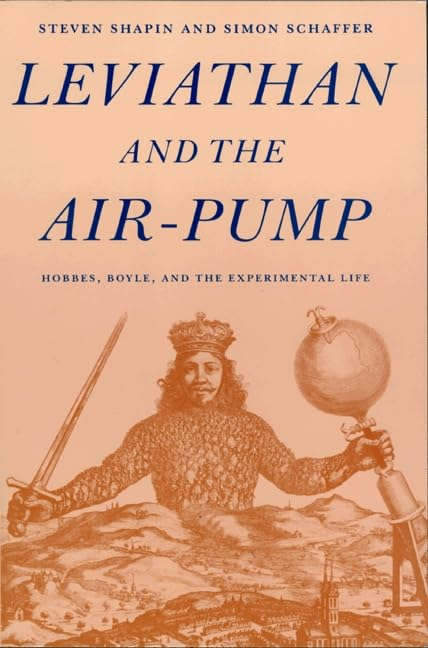 ⭐⭐⭐ |
||
What's fascinating is how unsettled everything still was. Hobbes thought Boyle's experiments were unreliable, socially contingent, and undermining real philosophy. Boyle thought Hobbes's approach was detached from nature itself. Shapin and Schaffer try very hard to write as if the outcome isn't known in advance, treating both sides as plausible. Along the way, you see arguments over what counted as evidence, whether the Royal Society really qualified as a public space, how much authority philosophers should have over scientists, and even how much deference still had to be paid to the church. Aristotle had claimed vacuums were impossible, the church had tied its prestige to Aristotle, and suddenly a bunch of gentlemen with an air pump were saying otherwise.
Reading this with hindsight can be a bit frustrating. I already know Boyle's approach won. But the authors are stubborn in not saying the obvious — that Boyle was basically right and Hobbes was mostly wrong. In places it reads more like a PhD in Philosophy than something aimed at casual readers. Still, I learned a lot. I went in knowing almost nothing about Boyle or Hobbes, and came out with a much sharper appreciation.
 ⭐⭐⭐ |
||
Bigger goals actually make things simpler: distractions become obvious, mediocre projects lose their appeal, and the high-leverage work stands out fast. The authors lean heavily on ideas like the 80/20 rule (focus on the 20% exclusive to you by giving up the 80% busy work) and “unique ability,” and the entrepreneur stories make it clear that real breakthroughs often come from stopping good work to make space for great work—both in business and in life.
This isn't a book full of tactics or hacks—it's more of a mindset shift. But if you've ever felt busy without feeling effective, "10x Is Easier Than 2x" is a great reminder that the path to bigger impact usually has less to do with doing more, and a lot more to do with doing less, better.
| 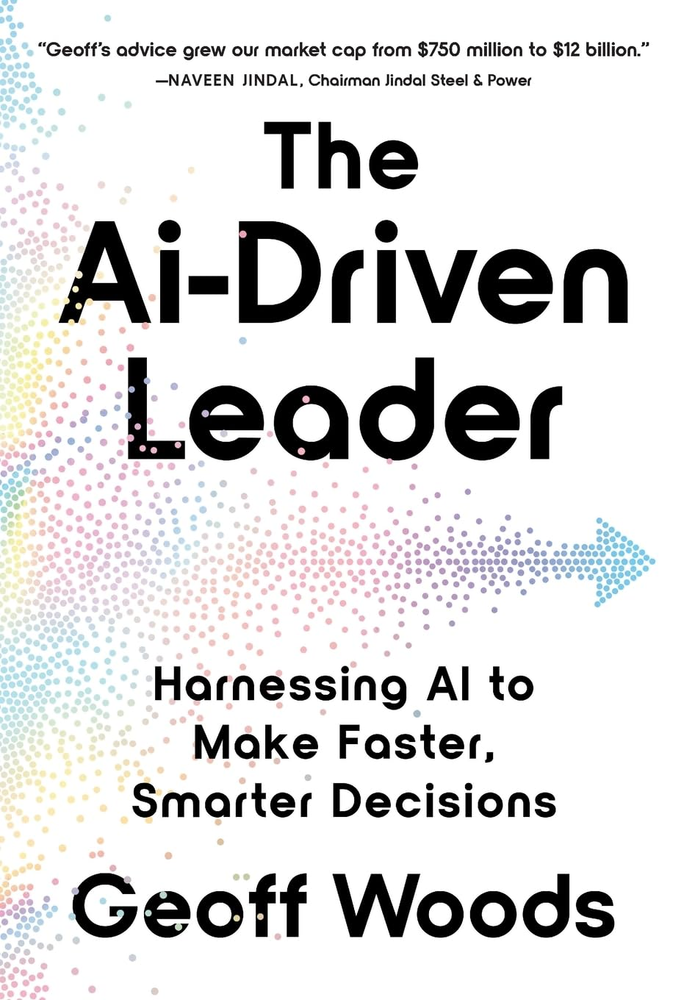 ⭐⭐⭐ |
||
That said, the book felt highly repetitive, and at times more like a marketing funnel than a standalone read. The constant push to visit his website or enroll in a leadership program became overwhelmingly annoying.
Is this my favorite AI book that came out in 2024? No. But for what it's trying to be — a broad, accessible, leadership-oriented overview — it works. If you're looking for depth, this probably isn't the book, but worth reading nonetheless.
| 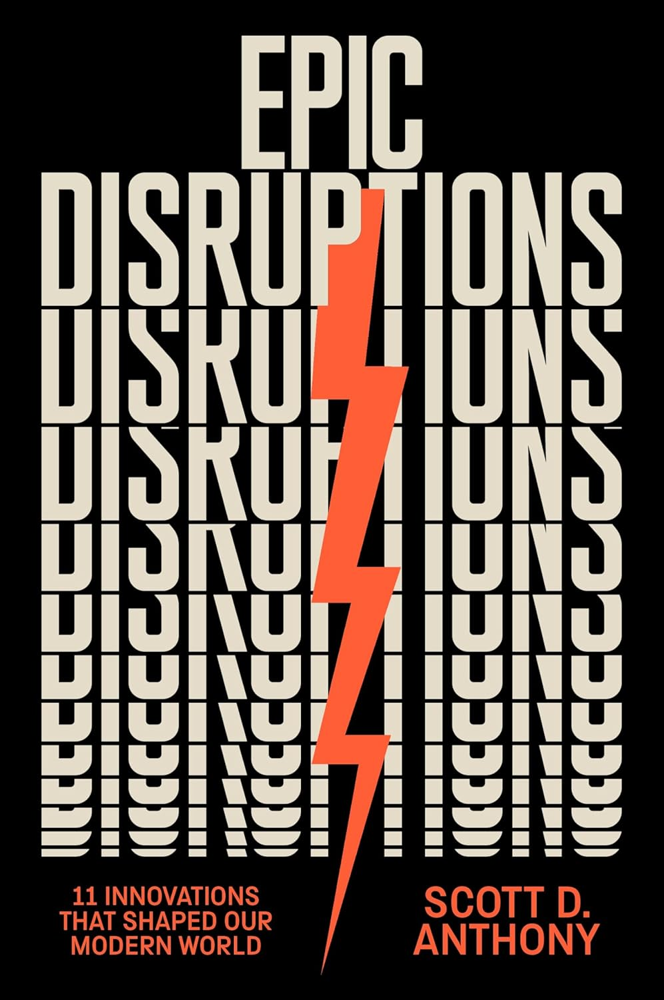 ⭐⭐⭐⭐ |
||
One thing I really liked is how personal the book feels. Anthony was a student, colleague, and close friend of Clay Christensen, and you can feel that influence throughout. He walks through eleven "epic disruptions" — from gunpowder and the printing press to the scientific revolution, disposable diapers, Julia Child, McDonald's, and the iPhone — and shows how many of them sat around for years (sometimes decades) before finally taking off. Most "overnight successes" turn out to be anything but.
Anthony also doesn't pretend disruption is all upside. It creates real tradeoffs and real consequences, many of which we don't see until much later. Still, his view is ultimately optimistic: disruption has historically allowed more people to do things that matter to them by making the complex simple and the expensive affordable. Paying attention to the ideas that might look small or imperfect today but could end up changing everything.
| 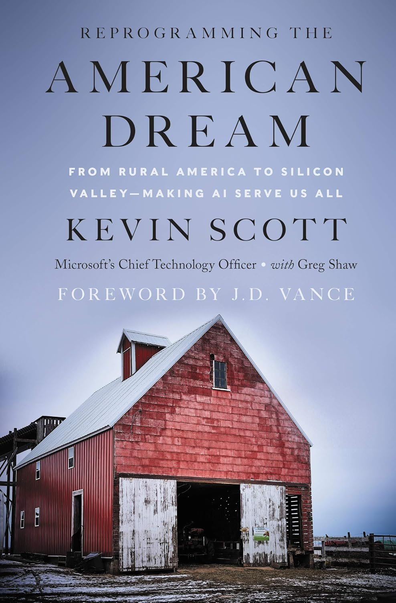 ⭐⭐⭐⭐ |
||
The AI parts were solid — thoughtful, optimistic, and very on-brand for Kevin — but they weren't the headline for me. He has a hopeful but grounded take on how AI and automation can create opportunity if we invest in people, education, and local ecosystems the right way. As someone who works on AI at Microsoft myself, a lot of that resonated, even if it covered some familiar ground. It felt less like predictions and more like values: AI should expand opportunity, not concentrate it.
What really made the book stick for me, though, was how clearly Kevin still carries his roots with him. I've worked with him in person in the past, and reading this gave more context on why he shows up the way he does — optimistic but pragmatic, big-picture but human. The book is ultimately less about technology and more about people, places, and making sure progress actually reaches beyond the usual zip codes. That framing made it well worth the read.
 ⭐⭐⭐ |
||
The authors make a persuasive case that liberal governance, in particular, has become expert at preventing harm but not at delivering outcomes. If you care about affordability, clean energy, healthcare, or scientific breakthroughs, they argue, you have to care about speed, scale, and execution—not just intent. That said, I did find myself wishing the lens were wider. The argument is very clearly aimed to the left and I kept wondering what a more politically balanced version of this conversation might look like, especially given that concerns about stagnation and state capacity aren't limited to one side.
The book's optimistic vision of an "abundant" future — faster building, better science, cleaner energy, higher productivity — is inspiring. Still, the book makes it clear that stagnation is a choice rather than an inevitability. If we know what needs to be built, why do we keep accepting systems that make it nearly impossible?
| 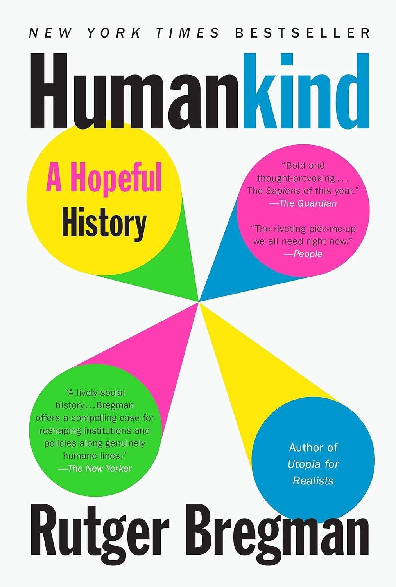 ⭐⭐⭐⭐ |
||
Some of the stories really stick. In moments we expect chaos — disasters like the Titanic or 9/11 — people consistently help one another instead of panicking. He also takes on Lord of the Flies, arguing that it's shaped a much darker view of human nature than reality deserves. The real-life counterpart is six Tongan boys shipwrecked on an island who survived for over a year by working together, sharing responsibilities, and looking out for each other. It's a great reminder that our go-to cultural stories often say more about our fears than about how people actually behave.
Bregman argues that when we assume people are selfish, we build systems based on mistrust — and that belief becomes self-fulfilling. If we start from the idea that people are fundamentally good, we might design better workplaces, schools, and societies. I am not sure I agree with every point, and some seems stretched, but "Humankind" leaves you thinking.
| 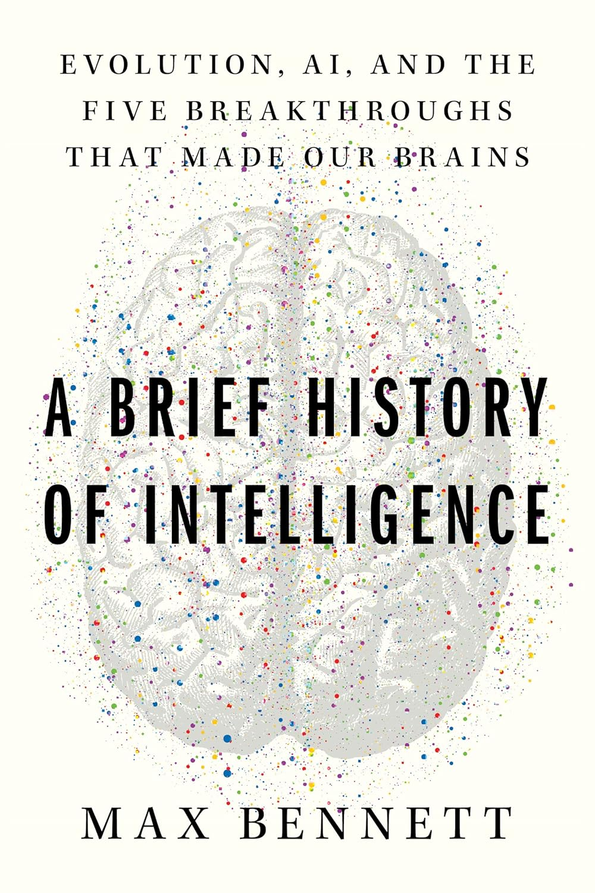 ⭐⭐⭐⭐⭐ |
||
The way Bennett connects these evolutionary leaps to we gained human level intelligence was mind blowing. I learned a lot from the the discussions of experiments done isolate how various functions the brain work. It ended up being my favorite read of the year.
Bennett argues that understanding how our brains evolved can actually help us build better AI systems as well. For example, he talks about how our ability to learn from others (social learning) is a huge part of what makes us smart, and how current AI often misses that aspect. It made me think differently about the limitations of today's models and where we might go next. Overall, if you're curious about intelligence — both human and artificial — this book is a gem. It's packed with insights but never feels overwhelming. Definitely recommend it for anyone wanting to understand what makes us smart.
| 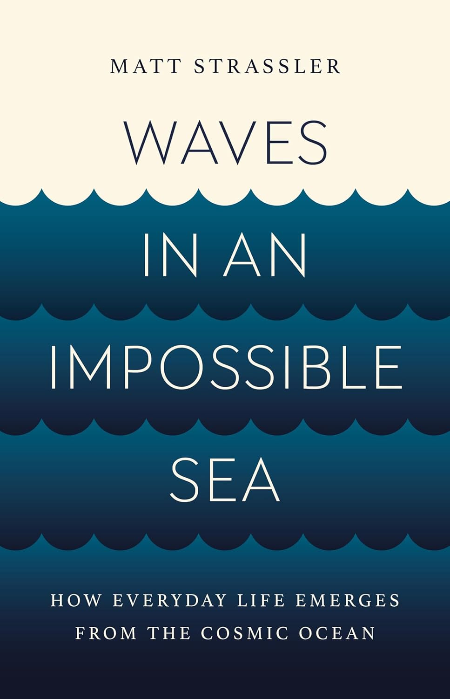 ⭐⭐⭐⭐⭐ |
||
What I loved most is how he explains big ideas — particles vs. waves, light, mass, and the Higgs field — without dumbing them down or burying you in math. Electrons and photons aren't just tiny dots; they're waves in underlying fields, and the Higgs field quietly gives those waves their mass. Along the way, he clears up a lot of misconceptions (including why mass doesn't break relativity and why we can't outrun light) and uses everyday examples like music, resonance, and vibration to make the physics click.
By the end, the book feels surprisingly philosophical. The takeaway isn't just how the universe works, but that we're deeply part of it — made of the same waves and fields that shape everything else. It's not always a light read, but it's fascinating, thought-provoking, and genuinely improved my understanding.
| 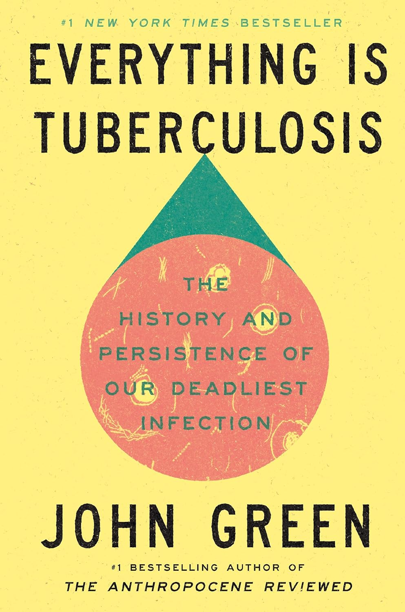 ⭐⭐⭐⭐⭐ |
||
To me, one of the most surprising side stories is about Arthur Conan Doyle, back when he was a small-town doctor watching patients rush to Berlin for Robert Koch's supposed TB "cure". Disillusioned by what he saw — ambition and hype moving faster than evidence — Conan Doyle eventually walked away from medicine altogether, turning to writing and ultimately creating Sherlock Holmes. Green uses moments like this to show how science, ego, and storytelling collide, especially during periods when society is moving from superstition toward evidence-based thinking.
What stuck with me most is how Green keeps pulling the reader back to the present. He makes it impossible to see TB as a historical tragedy without also seeing it as a modern moral failure. Green details heartbreaking and sobering stories of modern people and families dealing with Tuberculosis today. This isn't just a history or science book — it's a quiet but powerful argument that a disease we could have solved long ago remains deadly by societal choice.
 ⭐⭐⭐⭐ |
||
The book opens with a great classroom moment where Rosling challenges his students to guess basic global facts, like child-mortality rates. Almost everyone gets it wrong. That exercise becomes his way of "capturing the monster" hiding in plain sight: our tendency to think the world is far worse — and more divided — than it actually is. Rosling argues this is due to the "gap instinct", or our habit of splitting the world into neat buckets like rich vs. poor or developed vs. developing. Using sharp data and simple visuals, he shows how outdated that view is. Most people don't live at the extremes at all — they live in the middle. Only a small fraction of the global population lives in extreme poverty, life expectancy has increased dramatically, and many countries we mentally label as "developing" have made huge progress. The problem isn't lack of caring — it's that our mental models haven't caught up with reality.
What I appreciated most is that Rosling isn't saying "everything is fine". He's saying that progress and problems can both be true at the same time. Seeing the real data doesn't make you complacent; it actually makes you more effective, because you're acting on facts instead of fear. "Factfulness" is optimistic without being naive, practical without being preachy — and it's a great reminder that understanding how far we've come is often the best way to figure out what to do next.
| 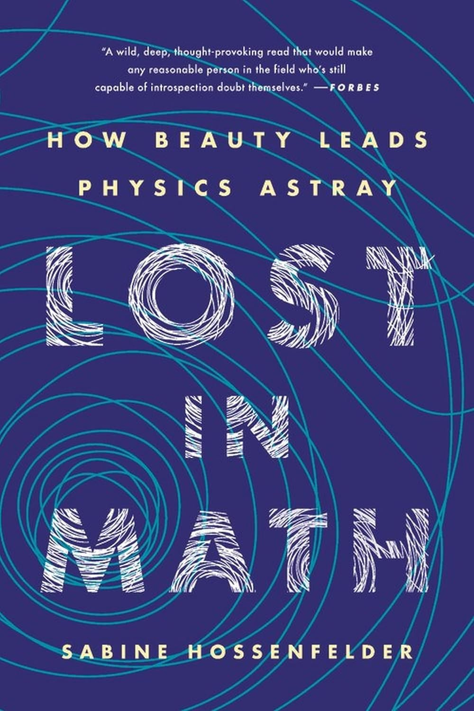 ⭐⭐⭐⭐⭐ |
||
She spends a lot of time critiquing big ideas like supersymmetry, string theory, and multiverse models — fields that promised breakthroughs but haven't delivered testable predictions, even after decades and massive investments like the LHC. What I appreciated is that she doesn't just blame individual theories; she looks at the incentives driving the whole system. Physicists chase peer approval, funding, and elegant math, and concepts like "naturalness" or "beauty" start standing in for evidence. Einstein once famously quipped that "God does not play dice with the universe" implying that statistical explanations (like with Quantum) are not beautiful (or "of God"), but Quantum Theory and its uncertainty are still the best explanation today.
The book isn't anti-math or anti-theory at all — it's more of a call for honesty and humility. Hossenfelder clearly loves physics, but she's uncomfortable with how far some areas have drifted from observation, especially in quantum foundations and cosmology. You come away slightly unsettled, questioning whether Physics is truly progressing.
| 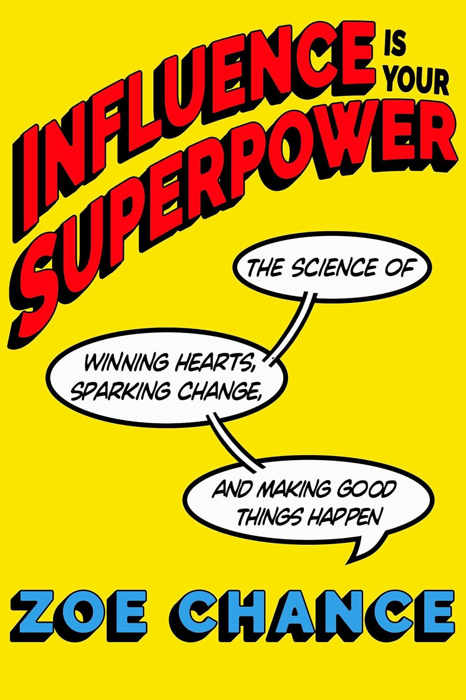 ⭐⭐⭐⭐ |
||
One of my favorite ideas in the book is the "Magic Question": "What would it take?"" It's deceptively simple, but incredibly powerful. Chance shares stories where this question unlocked unexpected, collaborative solutions — from Gloria Steinem learning directly from women in a Zambian village, to Chance's own internship experience where asking employees what it would take to meet higher production goals led to better ideas, higher morale, and real results. Instead of pressure or debate, it turns negotiation into a shared problem to solve together.
As an engineering leader who negotiates regularly with team members, peers, leadership, and customers, this book felt especially practical — and honestly empowering. It helped me see influence not as pushing harder, but as asking better questions and designing conversations that actually work. I walked away with tools I'm already using and a mindset that makes tough discussions feel more human and more productive. Highly recommend if you lead people, build things, or just want your ideas to land more effectively.
| 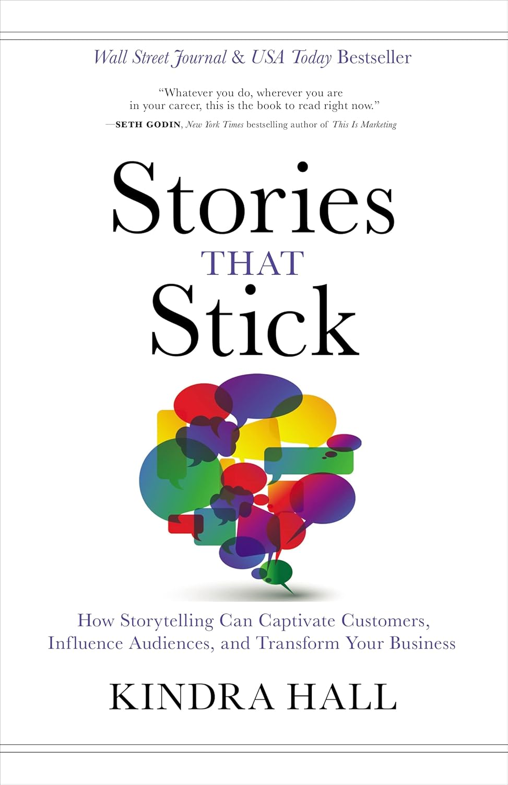 ⭐⭐⭐⭐ |
||
What I really liked is how practical the book is. Hall breaks a great story down into four simple ingredients: relatable characters, real emotion, a meaningful moment, and specific details. When those are there, people lean in and actually remember what you say. She also explains how different types of stories show up in business — whether you're talking about value, purpose, customers, or origins — and how each one helps bridge a specific gap in understanding.
Overall, the book was a great reminder that if you want people to understand your message — and care enough to act on it — you need to make it human. For anyone in leadership or customer-facing roles, this is a useful nudge to stop over-explaining and start telling better stories.
| 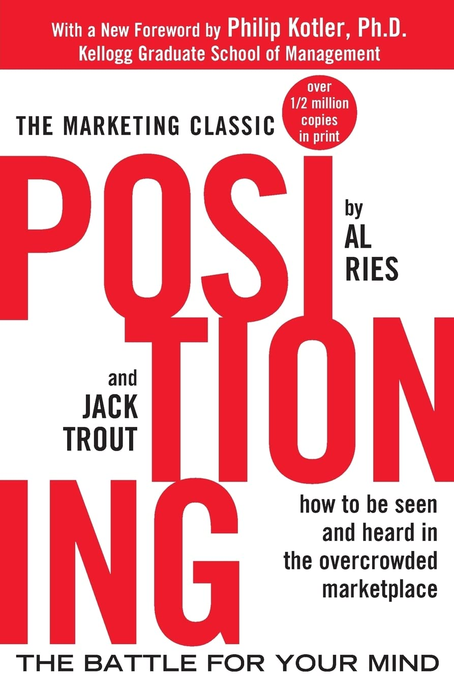 ⭐⭐⭐⭐ |
||
What I enjoyed most was seeing how new products define themselves against what already exists. Instead of competing head-on with the category leader, smart positioning reframes the comparison — faster, simpler, safer, or just different enough to stick. Reading it now, the ideas feel closely tied to disruption and book "The Innovator's Dilemma": challengers don't beat incumbents by out-engineering them at first, but by changing how people think about the problem.
I've seen firsthand how strong positioning can dramatically shape adoption, even for deeply technical products. In several of the products I've worked on, clarity of narrative and positioning mattered almost as much as architecture and performance. While some of the examples in the book are dated, the underlying lessons feel timeless — especially in fast-moving fields like AI, where winning the mental model battle is often the first step to winning the market.
 ⭐⭐⭐⭐⭐ |
||
One theme that really stood out to me is execution. Nvidia's cadence — shipping a new GPU architecture every year and effectively doubling capability — creates a compounding advantage that competitors simply can't match. The book makes it clear that this isn't accidental; it's the outcome of a culture built around urgency, deep technical ownership, and intolerance for complacency. Nvidia didn't just anticipate AI — it positioned itself, years in advance, to be the only company capable of delivering at the required scale.
I work at Microsoft in AI and have been using GPUs for more than 20 years, so reading this book felt both validating and enlightening. I've also met Jensen Huang multiple times over my career, and the leadership style described in the book — direct, demanding, and relentlessly forward-looking — tracks closely with what I've seen firsthand. "The Nvidia Way" isn't just a company history; it's a case study in how sustained execution, technical courage, and long-term thinking can create an enduring competitive moat. Highly recommended for anyone in tech, especially those building platforms at scale.